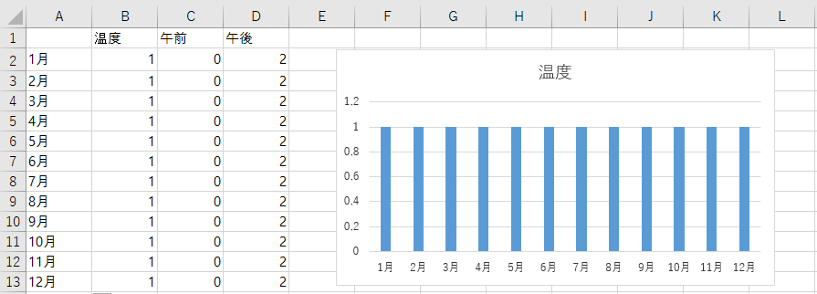
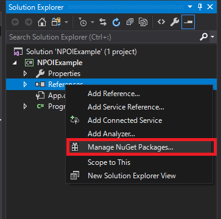
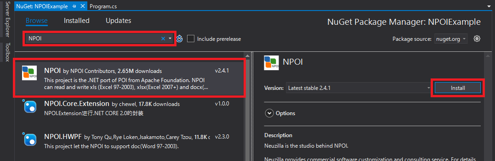
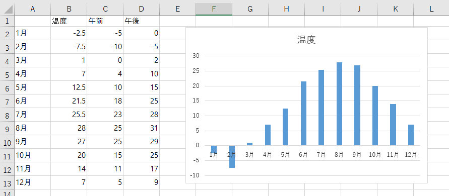

[C#] NPOIを利用してExcelを読み込んで出力する方法
こんにちは。明月です。
この投稿はC#のNPOIを利用してExcelを読み込んで出力する方法に関する説明です。
以前の投稿でC#でエクセルファイルを生成する方法でNPOIのライブラリを説明しました。
link - [C#] NPOIライブラリを利用してエクセルファイルを生成する方法
今回はNPOIを利用してエクセルを生成することではなく、エクセルのテンプレートを読み込んでエクセルを出力する方法に関して説明します。

例のデータは始めの列は月、二つ目は温度平均、三つ目は午前の温度、四つ目は午後の温度です。
右下のグラフは基本の表の数値の基盤で表れた一年間の気温平均です。
ここでやろうと思うことはエクセルで温度平均は関数でカラムを関数で計算するし、グラフもB列のデータで表示するので、エクセルを読み込んでC列のデータとD列のデータを修正すればB列のデータが更新されグラフが変わるかを確認しましょう。
NPOIを利用するためにNugetからライブラリをダウンロード及び連携しましょう。


using System;
using System.IO;
//共通 NPOI
using NPOI;
using NPOI.SS.UserModel;
//標準xlsバージョン
using NPOI.HSSF;
using NPOI.HSSF.UserModel;
//拡張xlsxバージョン
using NPOI.XSSF;
using NPOI.XSSF.UserModel;
namespace NPOIExample
{
class Program
{
// 実行関数
static void Main(string[] args)
{
// エクセルバージョン設定
// xlsは標準エクセル、xlsxのMSの拡張エクセル
// ここでは標準エクセルで作成する。
var version = "xls";
//var version = "xlsx";
// Workbook生成
var workbook = GetWorkbook(@"c:\work\Test.xls", version);
// Workbookの中に"Test Sheet"名でシート(Sheet)生成
var sheet = workbook.GetSheetAt(0);
// シート(Sheet)からセルを取得する。(無ければ、自動生成)
// 1月午前
GetCell(sheet, 1, 2).SetCellValue(-5);
// 1月午後
GetCell(sheet, 1, 3).SetCellValue(0);
// 2月午前
GetCell(sheet, 2, 2).SetCellValue(-10);
// 2月午後
GetCell(sheet, 2, 3).SetCellValue(-5);
// 3月午前
GetCell(sheet, 3, 2).SetCellValue(0);
// 3月午後
GetCell(sheet, 3, 3).SetCellValue(2);
// 4月午前
GetCell(sheet, 4, 2).SetCellValue(4);
// 4月午後
GetCell(sheet, 4, 3).SetCellValue(10);
// 5月午前
GetCell(sheet, 5, 2).SetCellValue(10);
// 5月午後
GetCell(sheet, 5, 3).SetCellValue(15);
// 6月午前
GetCell(sheet, 6, 2).SetCellValue(18);
// 6月午後
GetCell(sheet, 6, 3).SetCellValue(25);
// 7月午前
GetCell(sheet, 7, 2).SetCellValue(23);
// 7月午後
GetCell(sheet, 7, 3).SetCellValue(28);
// 8月午前
GetCell(sheet, 8, 2).SetCellValue(25);
// 8月午後
GetCell(sheet, 8, 3).SetCellValue(31);
// 9月午前
GetCell(sheet, 9, 2).SetCellValue(25);
// 9月午後
GetCell(sheet, 9, 3).SetCellValue(29);
// 10月午前
GetCell(sheet, 10, 2).SetCellValue(15);
// 10月午後
GetCell(sheet, 10, 3).SetCellValue(25);
// 11月午前
GetCell(sheet, 11, 2).SetCellValue(11);
// 11月午後
GetCell(sheet, 11, 3).SetCellValue(17);
// 12月午前
GetCell(sheet, 12, 2).SetCellValue(5);
// 12月午後
GetCell(sheet, 12, 3).SetCellValue(9);
// B列の関数を再設定
// なぜかプログラムでC列とD列にデータ入れることでB列のデータが更新されない。
for (int i = 1; i <= 12; i++)
{
GetCell(sheet, i, 1).SetCellFormula(String.Format("AVERAGE(C{0}:D{0})", i + 1));
}
// エクセルを出力する。
WriteExcel(workbook, @"c:\work\result." + version);
// コンソール出力
Console.WriteLine("Press Any Key...");
Console.ReadKey();
}
// Workbook読み込む関数
public static IWorkbook GetWorkbook(string filename, string version)
{
// ファイルストリームを生成する。
using (var stream = new FileStream(filename, FileMode.Open, FileAccess.Read))
{
// 標準エクセル.xls
if ("xls".Equals(version))
{
// 標準エクセルWorkbookを割当
return new HSSFWorkbook(stream);
}
// 拡張エクセル.xlsx
else if ("xlsx".Equals(version))
{
// 拡張エクセルWorkbookを割当
return new XSSFWorkbook(stream);
}
// xlsとxlsxじゃなければ、エラー発生
throw new NotSupportedException();
}
}
// シート(Sheet)から行を取得関数
public static IRow GetRow(ISheet sheet, int rownum)
{
// シートから行を取得
var row = sheet.GetRow(rownum);
// 行がnullなら
if (row == null)
{
// シートから行を生成する。
row = sheet.CreateRow(rownum);
}
// 行をリターン
return row;
}
// 行から列を取得関数
public static ICell GetCell(IRow row, int cellnum)
{
// 行から列を取得
var cell = row.GetCell(cellnum);
// 列がnullなら
if (cell == null)
{
// 行から列を生成する。
cell = row.CreateCell(cellnum);
}
// 列をリターン
return cell;
}
// エクセルシート(Sheet)からセル取得関数(rownumは行、cellnumは列)
public static ICell GetCell(ISheet sheet, int rownum, int cellnum)
{
// 行を取得
var row = GetRow(sheet, rownum);
// 行から列を取得
return GetCell(row, cellnum);
}
// エクセルのWorkbookをファイルに格納する関数
public static void WriteExcel(IWorkbook workbook, string filepath)
{
// ファイルストリームを生成する。
using (var file = new FileStream(filepath, FileMode.Create, FileAccess.Write))
{
// 格納する。
workbook.Write(file);
}
}
}
}
これからエクセル生成したディレクトリに移動してファイルを開きましょう。

結果をみれば既存B列のデータをC列のデータが変更されました。そのあとB列の関数データが更新され、グラフの結果まで更新されました。
作業しながらなぜかC列とD列のデータを変更することだけでB列のデータが自動に更新されませんでした。トリガーみたいな呼び出しが必要らしいです。
私の場合はSetCellFormula関数を利用してエクセル関数を再設定しました。
グラフの場合はB列のデータが変わることですぐデータが反映されます。
私の例の場合は簡単なデータを扱うので別の最初からエクセルを作成することと読み込んで後修正することとの差異がありません。
でも、実務ではかなり複雑なデータを扱う可能性が高いです。
その時、最初からエクセルをC#で作成することはすごく大変だと思います。デザインまで必要な部分ならスタイル設定はフォント設定まで必要です。エクセルをもっと知る方ならVBA領域も考えなければならないです。
それをすべてC#で作成することになると複雑です。なのでプログラムのパフォーマンス部分もすごく遅くなります。
なので実際はある程度にエクセルを作成してC#で読み込んで後データ値だけ更新することでエクセル出力する仕様が多いです。
ここまでC#のNPOIを利用してExcelを読み込んで出力する方法に関する説明でした。
ご不明なところや間違いところがあればコメントしてください。
- [C#] 非同期ソケット通信(IOCP)-APMパターン2020/05/18 18:45:37
- [C#] 非同期ソケット通信(IOCP)-EAPパターン2020/05/15 19:31:02
- [C#] NPOIを利用してExcelを読み込んで出力する方法2020/05/08 10:43:52
- [C#] NPOIライブラリを利用してエクセルファイルを生成する方法2020/05/07 01:49:01
- [C#] Geckoライブラリを利用してウェブスクレイピングする方法2020/05/05 00:52:26
- [C#] PDFを作成する方法(iTextSharp)2020/05/03 10:22:40
- [C#] シリアライズ(Serialization)をする方法2020/04/30 19:32:04
- [C#] dynamicタイプの動的パラメータ-DynamicObject(WinFormでASP.MVCのViewBagオブジェクトを使用する方法)2020/04/29 22:41:32
- [C#] Stringの補間式(interpolation)2020/04/27 20:39:57
- [C#] Newtonsoft.JSONライブラリを利用してJsonデータ構造を扱う方法2020/04/23 20:19:53
- [C#] EMailを送信する方法(System.Net.Mail)2020/04/22 19:00:42
- [C#] ini環境ファイルを使う方法2020/04/22 00:09:39
- [C#] 環境設定ファイルを扱う方法(System.Configuration)2020/04/20 19:37:57
- [C#] Reflectionを利用してクラス複製する方法2020/04/17 00:34:33
- [C#] XMLをXPathを利用してデータを取得する方法2020/04/16 00:47:17
- [Python] 03. Pythonでリスト(list)とタプル(tuple)、そしてディクショナリ(dictionary)、セット(set)2020/05/27 18:49:08
- [Python] 02. データタイプ、変数宣言そしてコメントする方法2020/05/26 18:16:52
- [Python] 01. Python3をインストールする方法(Anacondaインストール)2020/05/25 19:02:44
- [Java] HttpConnectionを利用してウェブページを取得する方法2020/05/20 23:53:24
- [Java] Jsoupを利用してXMLファイル(HTML)を扱う方法2020/05/19 19:32:21
- [C#] 非同期ソケット通信(IOCP)-APMパターン2020/05/18 18:45:37
- [C#] 非同期ソケット通信(IOCP)-EAPパターン2020/05/15 19:31:02
- [C#] ソケット(Socket)通信をする方法2020/05/13 17:37:13
- [C#] NPOIを利用してExcelを読み込んで出力する方法2020/05/08 10:43:52
- [C#] NPOIライブラリを利用してエクセルファイルを生成する方法2020/05/07 01:49:01
- [C#] Geckoライブラリを利用してウェブスクレイピングする方法2020/05/05 00:52:26
- [C#] PDFを作成する方法(iTextSharp)2020/05/03 10:22:40
- [C#] シリアライズ(Serialization)をする方法2020/04/30 19:32:04
- [C#] dynamicタイプの動的パラメータ-DynamicObject(WinFormでASP.MVCのViewBagオブジェクトを使用する方法)2020/04/29 22:41:32
- [C#] Stringの補間式(interpolation)2020/04/27 20:39:57